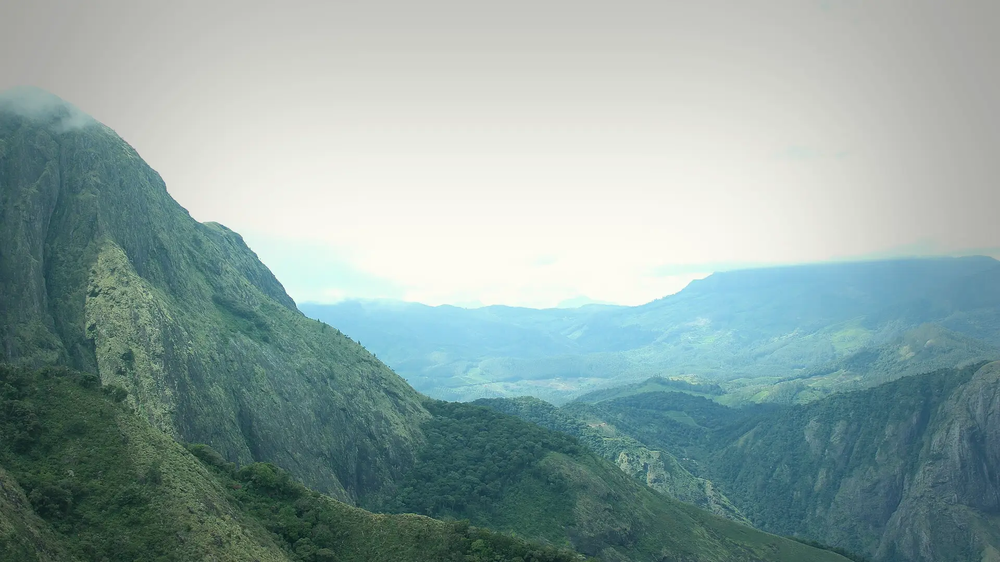

01Base camp · about 6,000 ftkm 0.1
Above Munnar
24kmFrom Munnar · Via Mattupetty
The Kerala Forest Development Corporation's base camp, locally called Silent Valley Base Camp, sits at about 6,000 ft, 24 km from Munnar by road.

Photo: Niyas8001, CC BY-SA 4.0മീശപ്പുലിമല · Idukki, Western Ghats
The trek in one line, and what you can do with it.
A guided Kerala Forest Development Corporation trek from a camp high above Munnar.
4 stops on the map, then the climb. Scroll the stops and the map follows.
01Base camp · about 6,000 ftkm 0.1
24kmFrom Munnar · Via Mattupetty
The Kerala Forest Development Corporation's base camp, locally called Silent Valley Base Camp, sits at about 6,000 ft, 24 km from Munnar by road.
02Rhodo Valleykm 7.6
4x4Last · Point for jeeps
Past the Pandava cave, where villagers believe the Pandavas sheltered in exile, the path reaches Rhodo Valley and its walkway lined with pines.
03Meesapulimala · 2,640 mkm 9.3
2ndRank · Highest in the Western Ghats
The top of Meesapulimala, 2,640 m, second only to Anamudi in the Western Ghats. Anamudi is in view, with the Mattupetty and Anayirangal reservoirs.
04Base campkm 18.6
18.6kmTrek total · On the map
Down past Rhodo Valley to the base camp, and the drive back to Munnar.
Best in Sep–Mar.
Dark: the months the trek’s sources call its best. Mid: possible. See all treks in September.
Base prices from 2 operators’ own pages, per person. GST and travel are often extra. Treqz sells nothing.
The practical things, then the questions people ask.
From Bangalore, take an express bus to Munnar, about 463 km. A jeep takes you on from Munnar.
Trekup IndiaBook online or through an operator. Then collect the signed paper permit at the KFDC office in Munnar before you go to base camp. Book 2–4 weeks ahead for weekends.
ExplurgerThe jeep from Munnar to base camp is often billed apart, about ₹2,000. Check if your package includes it.
ExplurgerFrom base camp, a 4 km jeep track runs to Rhodo Valley. It is the last point a four-wheeler can reach.
Kerala TourismBase camp tents take at most 40 guests a night. Check in by noon; check out 23 hours later. Rhodo Mansion has an elephant trench around it.
Kerala TourismAbout 18.6 km of walking over 2 days on the trail.
The highest point is 2,640 m, about 850 m above the start.
Its sources grade it Hard.
Sep–Mar.
₹3,800 to ₹4,000 per person: base prices from 2 operators' own pages. GST and travel are often extra.
Book online or through an operator. Then collect the signed paper permit at the KFDC office in Munnar before you go to base camp. Book 2–4 weeks ahead for weekends.
Quick-dry T-shirts, Cap, scarf or bandana, Poncho, Water, at least 2 litres, Sunglasses, Trekking poles, Plastic sheet, Whistle. The full list is on the 3D page.
Yes: Dec–Feb is among its best months.
Its sources grade it Hard and it takes 2 days on the trail, with a highest point of 2,640 m.
Agasthyarkoodam, Chembra, Tadiandamol, Kumara Parvatha, Kudremukh.


Treks in September · Treks in October · Treks in November · Treks in December · Treks in the Western Ghats · Difficult Treks in the Western Ghats · Winter Treks in India · Weekend Treks in India (1–2 Days) · 2 Day Treks in India · Toughest Treks in India · Free trek finder · All treks in 3D